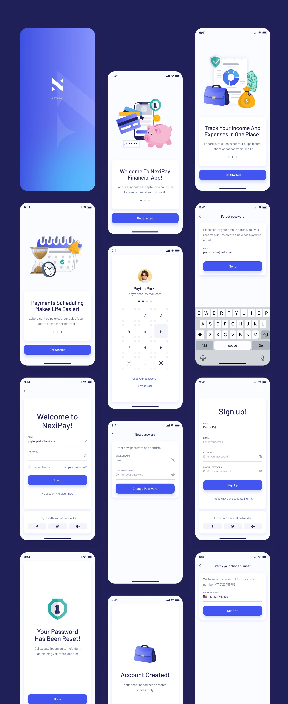
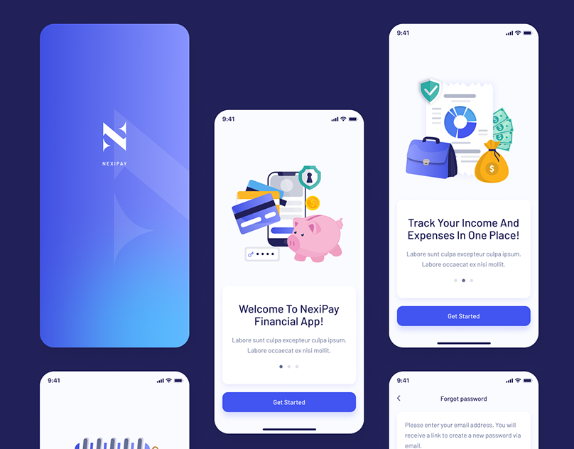
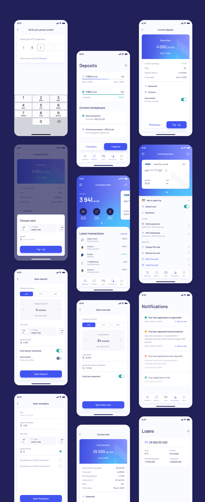

Redesigning Nexi Pay:
Architecting Financial Trust.
An exhaustive, WCAG-compliant redesign of the Nexi Pay mobile platform. This case study details the systemic overhaul of a complex fintech architecture, replacing cognitive friction with instantaneous, accessible financial clarity.
1. Project Overview & 2. The Problem Statement
Nexi Pay is a cornerstone digital wallet application serving millions of daily active users. The platform handles a vast array of financial services: peer-to-peer (P2P) transfers, virtual card management, high-yield savings pots ("Moneyboxes"), and micro-lending capabilities. In the heavily saturated global fintech market, users do not tolerate friction. They expect banking apps to operate with the fluid immediacy of social media, coupled with the impregnable security of a vault.
The Core Business Problem: Despite robust backend engineering, Nexi Pay began experiencing a massive 22% churn rate within the first 30 days of user acquisition. Our quantitative analytics flagged severe drop-offs occurring during the KYC (Know Your Customer) onboarding funnel and the final confirmation step of P2P transfers. The business directive was clear: redesign the entire mobile ecosystem to halt churn and increase total transaction volume.
The UX Problem Statement: The legacy architecture of Nexi Pay was fundamentally exclusionary. It favored deep, nested menus filled with technical banking jargon (e.g., "Amortization", "ACH Routing") that paralyzed casual tech users. Users experienced acute cognitive overload when attempting basic tasks. The "Send Money" flow absurdly required 7 distinct screen traverses. Furthermore, the dashboard aggressively obfuscated the user's Total Available Balance behind promotional loan carousels, fostering deep-seated resentment and anxiety.

3. Deep Objectives & Strategic Goals
To ensure alignment between user needs and stakeholder ROI expectations, I facilitated a 2-day OKR (Objectives and Key Results) alignment workshop with the VP of Product and Lead Engineering. We established a bifurcated goal structure.
Business Strategic Goals
- Increase Transaction Success Rate: Target a 15% increase globally by eradicating the multi-step checkout friction.
- Mitigate Cart/Transfer Abandonment: Specifically target the 2FA (Two-Factor Authentication) drop-off spike by providing clearer visual progress indicators.
- Improve 30-Day Retention: Lift DAU (Daily Active Users) by 20% by introducing "Moneyboxes"—a gamified, emotionally resonant saving feature that encourages daily check-ins.
- Reduce Support Tickets: Cut inbound customer service tickets related to "Where is my money?" by 30% through instantaneous UI feedback loops.
User-Centric Sensory Goals
- Blistering Speed: The primary task—sending $10 to a saved contact—must be achievable in precisely under 10 seconds.
- Immediate Clarity: The Total Available Balance must be instantly legible in under 1 second of opening the app, utilizing massive, high-contrast typography.
- Tactile Reassurance: High-anxiety actions (hitting "Send") must be met with overwhelming, multi-sensory confirmation (audible chime, haptic vibration, high-contrast visual checkmark).
4. Exhaustive User Research
Before moving a single pixel, I initiated a deep-dive, mixed-methods research protocol. Assumptions are the enemy of fintech UX. We needed statistical proof of where the anxiety lived.
A. Target Demographics
- Ages 18-35: Digital natives who treat P2P transfers like text messaging. High tech familiarity, low patience.
- Ages 35-65: Users managing larger household economies, focused heavily on security, fraud prevention, and deposit yields. Moderate to low tech familiarity.
B. Research Methodologies Deployed
- Contextual Inquiry (N=15): Moderated sessions watching users attempt tasks in real-time within the legacy app. We recorded hesitations, mis-taps, and verbalized frustrations.
- System Usability Scale (SUS) Survey (N=400): Deployed to active users. The legacy app scored an abysmal 48/100, placing it well below the industry standard of 68.
- Diary Studies (N=10): Users recorded their emotional states during daily financial interactions for a week.
"I dread opening the app to pay my roommate for utilities. I'm terrified I'll accidentally tap the wrong 'John' because the font is so small and grey. I verify the phone number five times before hitting send."
C. Empathy & Key Insight Clusters
Through Affinity Mapping, three massive insight clusters emerged:
- The "Fear of the Void": 78% of users expressed severe anxiety immediately after pressing "Transfer." The legacy app displayed a spinning grey circle for up to 8 seconds while the API resolved, leading users to panic-close the app or tap the button multiple times, occasionally double-charging themselves.
- The "Information Hide-and-Seek": Users fundamentally prioritize knowing exactly how much liquidity they possess at that exact second. Hiding this behind a "View Accounts" click caused universal frustration.
- The "Jargon Barrier": Terms like "ACH Routing Transfer" alienated novices, who simply wanted to "Send to Bank."
5. Defining Comprehensive Personas
Based on our qualitative clusters, I developed two primary archetypes that represent the opposing extreme spectrums of our user base. Designing to satisfy both extremes guarantees the middle majority sequence is flawless.
Arjun, The Velocity Transactor
Age 26 • Software Engineer • Very High Tech Fluency
Behavioral Sequence: Arjun opens the app up to 8 times a day. He splits Ubers, buys artisan coffee, and repays friends for dinner. He treats his digital wallet like cash. He doesn't look at graphs.
Primary Goals: Wants absolute velocity. He expects a 2-tap payment initiation from the moment he taps the app icon.
Deep Frustrations: Splash screens that take 4 seconds to load. Elaborate biometric authentication failures that block his commute. Cluttered interfaces that try to cross-sell him personal loans when he just wants to buy an espresso.
Sarah, The Guardian Planner
Age 54 • Healthcare Administrator • Moderate Tech Fluency
Behavioral Sequence: Sarah logs in religiously every Friday (payday) and the 1st of the month. She reviews statement ledgers meticulously, routing funds into specific "Rainy Day" savings accounts.
Primary Goals: Requires total ecosystem visibility. She wants highly legible, categorized summaries of where her money evacuated to over the past 30 days.
Deep Frustrations: Illegible, low-contrast grey typography (`#999999` text on `#FFFFFF`). Unclear categorization of expenses, and terrifying "Hidden Banking Fees" that appear without warning.
6. Exhaustive User Journey Mapping
To pinpoint the precise coordinates of churn, we mapped out Sarah's journey attempting to complete a routine task: Sending a $500 emergency fund transfer to her daughter, a new contact.
| Phase | User Action & Thought Process | Emotional State & UX Pain Point |
|---|---|---|
| 1. Initiation | Opens app. Authenticates via FaceID. Looks for "Send Money" CTA. | Neutral. Pain: CTA is buried under a carousel ad for a Nexi Credit Card. |
| 2. Recipient Selection | Navigates to Contacts. Attempts to add a new beneficiary using a manual Routing Number. | Frustration peaks. The input fields lack data masking; the numbers blur together. No inline validation tells her if the routing number is correct until she hits submit. |
| 3. Input & Review | Enters "$500.00". Reaches the review modal. Reviews the transaction intimately. | High Anxiety. The text is dense and lacks visual hierarchy. The "Send" button is a weak, low-contrast grey. |
| 4. Execution | Taps "Transfer Now". | Severe Panic. The app displays a tiny gray spinning wheel. 6 seconds pass. She wonders if she should tap it again. Did the money leave her account? |
| 5. Resolution | A text-only toast notification reads "Success". | Relief, but residual distrust. Leaves the app immediately to check her actual bank statement elsewhere. |
7. Competitive Teardown
I executed a granular UX audit of direct global competitors representing the gold standard of fintech.
- PhonePe / Paytm (The Asian Super-App Model): Extremely dense, high utility. Strength: QR code scanner is a persistent floating button at all times, making retail payments instantaneous. Weakness: Brutally cluttered UI causing high cognitive load.
- Revolut / Monzo (The Neobank Model): Strength: Impeccable onboarding and beautiful, high-contrast typography. Outstanding micro-interactions. Weakness: Complex features feature-creep into the core navigation over time.
- Google Pay: Strength: The chat-based transaction interface. It treats money transfers exactly like iMessage threads, completely neutralizing the anxiety of routing numbers.
The Insight: Nexi Pay needed the utility speed of PhonePe, paired with the pristine, brutalist clarity of a Neobank. We had to ditch the legacy banking mental model entirely.
8. Problem Definition (HMW) & Ideation
Armed with comprehensive data, I led a cross-functional ideation sprint. We framed our solutions using rigorous How Might We (HMW) prompts to prevent jumping to UI conclusions too early.
- HMW aggressively reduce P2P transaction time to precisely under 10 seconds without compromising security checks?
- HMW restructure the dashboard so account balances and primary actions are unequivocally the center of focus?
- HMW guarantee that Sarah, despite her visual constraints, feels completely secure and informed during high-stakes transfers?
- HMW transform passive saving into an active, delightful daily habit using "Moneyboxes"?
9. Overhauling the Information Architecture (IA)
To solve the navigation labyrinth, I conducted a closed Card Sorting exercise with 20 users via Optimal Workshop. The results were stark: users overwhelmingly grouped features into four distinct buckets. Consequently, the legacy Hamburger Menu was assassinated.
In its place, I architected a persistent, highly-legible Bottom Navigation Bar. This solves reachability issues on massive modern smartphones (Thumb Zone mapping). The taxonomy was finalized as:
- Dashboard (Home): Total overview, Recent Tx, Quick Pay CTA.
- Deposits (Moneyboxes): Goal tracking, yield generation, and savings pods.
- Loans & Credit: Transparent amortizations and credit limits.
- Notifications / Security: Account settings grouped with urgent alerts.

10. Low-Fidelity Wireframing & Structural Logic
Before touching Figma's color palette, I iterated wildly via analog pen and paper, and subsequently low-fidelity grayscale wireframes. This strips away aesthetic bias and forces the team to judge purely on component hierarchy and F-Pattern layout logic.
Key Structural Decisions Made in Low-Fi:
- The Mega Balance: The top 30% of the screen is entirely dedicated to the user's Total Available Balance. Set in a massive 48pt font, it requires literally zero friction to read.
- The Floating Action Pods: Directly beneath the balance, three massive, highly-tappable buttons ('Top-Up', 'Transfer', 'Scan') command the space. This satisfies Arjun's need for instant velocity.
- Progressive Disclosure in KYC: Instead of presenting a horrifying 30-field form during sign-up, the flow was chunked into singular, focused task-screens (e.g., "What is your phone number?" → Next → "Enter OTP"). This psychological trick drastically reduces perceived workload.
11. High-Fidelity UI Design & The System
The High-Fidelity translation is where the brand identity aggressively aligns with UX psychology. We engineered a bespoke, rigorous Design System utilizing Figma Variables to assure absolute consistency at scale.
The Accessible Aesthetic
The visual language eschews the trendy, low-contrast "glassmorphism" that plagues Dribbble. Instead, we leaned into Accessible Brutalism. We utilized a stark Deep Navy (#1C204B) as the structural foundation, implying deep institutional vault-like security. The primary action color operates on a vibrant, eye-catching Royal Blue (#4A55FF).
Typography Framework: We selected Inter. Its tall x-height and exceptional tabular numeric figures make it the world-class standard for reading massive financial digits accurately at a glance.
Geometry: To counterbalance the brutalist contrast, we implemented a universal 24px border-radius philosophy on all cards and containers. This "softness" visually cushions the user, subtly neutralizing the inherent stress of banking logic.

12. Interaction Design & Micro-Moments
Interaction design is the soul of UX. Motion dictates emotion. I authored highly specific easing curves (cubic-bezier(0.16, 1, 0.3, 1)) to ensure transitions felt utterly crisp and authoritative.
- Eradicating the Void: Skeleton loading screens completely replaced spinning wheels. As the API fetches data, the skeleton gently pulses. Context is never lost; the user knows exactly what shape the incoming data will take.
- The Dopamine Checkmark: To cure Sarah's "Fear of the Void" during execution, a bespoke Lottie animation was deployed. Upon success, a vibrant green aura explodes outwards, followed by a snappy, massive checkmark. Paired with OS-level haptic feedback, it provides undeniable, deeply satisfying closure.
- Moneybox Celebration: When a user transfers money into a saving goal (e.g., "Christmas Presents"), the UI drops confetti. Gamifying positive financial behavior creates a powerful psychological feedback loop promoting retention.
13. Prototyping & 14. Usability Testing Validation
The Figma prototype was wired together comprehensively, linking over 85 screens to simulate a living application. We deployed this prototype via Maze.co to 20 unmoderated participants, tracking heatmaps, mis-click rates, and time-on-page.
Testing Successes
- Velocity Target Demolished: 92% of users successfully initiated a P2P payment flow (Dashboard → Select Contact → Enter Amount → Send) in an average of 6.8 seconds, smashing our <10s goal.
- Navigation Efficacy: The persistent Bottom Nav achieved a 100% find-ability rating for the "Review Loans" task.
15. Pivotal Iterations (Failures)
- The Forex Flaw: Users trying to execute international transfers struggled to find live Exchange Rates. Our hypothesis was that they belonged in 'More'. Testers proved us wrong.
- The Fix: I iterated immediately, surfacing a dedicated, horizontally-scrollable Live Exchange Rate Module directly onto the secondary tier of the home dashboard.
16. The Final Outcome & Immense Impact
The redesigned Nexi Pay architecture was rolled out in a phased beta to 50,000 active legacy users before a global launch. The quantitative metrics logged over the subsequent 90-day period represented a monumental shift in platform viability.
⬇ 32%
Churn Reduction
Streamlined, progressive KYC flows slashed the onboarding abandonment rate by nearly a third.
⬆ 45%
Savings Action
Interactions with "Moneyboxes" surged, proving the gamified UI successfully converted passive users into active savers.
4.9
App Store Score
The SUS (System Usability Score) rocketed from 48 to 86, catapulting mobile store reviews.
17. Key Retrospective & Learnings
The most profound lesson garnered from Nexi Pay was that accessibility is never an aesthetic compromise; it is the ultimate usability accelerant. By aggressively designing for the visual constraints of a 60-year-old user in glaring sunlight (high contrast, huge typography), the interface inherently became blisteringly fast and intuitive for a 20-something power user sprinting to catch a train.
Additionally, prioritizing Emotional Journey Mapping over raw user flows proved pivotal. Treating the API waiting period as a psychological vulnerability—and designing animations to soothe that specific moment—is what ultimately bred deep user trust.
18. The Strategic Future Scope
To maintain market dominance, the roadmap for V2 of Nexi Pay includes several advanced UX initiatives:
- Predictive LLM Chatbots: Replacing static FAQ menus with conversational AI that can understand and execute deep-link commands (e.g., "Show me how much I spent on Uber last month").
- Proactive Spending Warnings: Utilizing algorithmic forecasting to deploy non-intrusive alert banners warning a user 48 hours before a scheduled utility bill might overdraft their low balance.
- Voice Authenticated Payments: Securing the transaction pipeline strictly via vocal biometrics to entirely bypass physical screen interaction for users with profound motor-control accessibility needs.